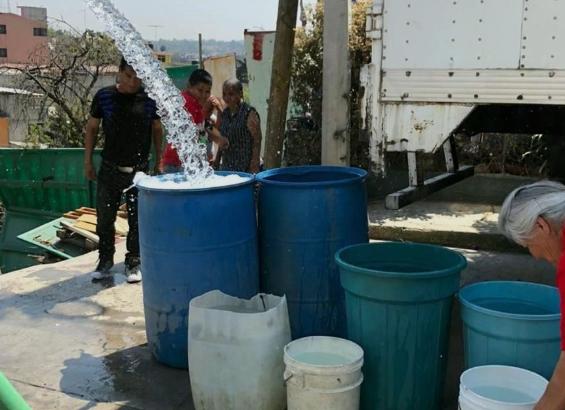
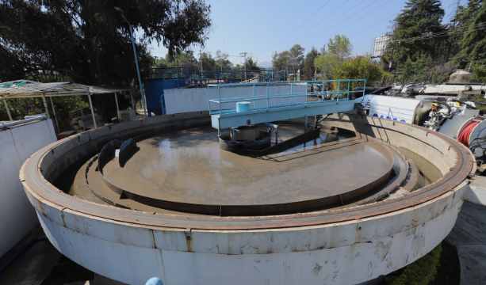

La crisis de agua en Naucalpan de Juarez, Estado de Mexico, es uno de los problemas urbanos y ambientales mas
graves que enfrenta actualmente la zona metropolitana del Valle de Mexico. Durante los ultimos tiempos, miles de
habitantes han sufrido cortes constantes, baja presion, tandeos y desabasto de agua potable.
Esta situacion afecta
tanto a colonias populares como a zonas residenciales y comerciales, generando problemas de salud, economicos,
sociales y ambientales.
1. Reduccion del suministro del Sistema Cutzamala
Naucalpan depende en gran medida del Sistema Cutzamala. La reduccion de agua proveniente de este sistema,
causada por la sequia y los bajos niveles de las presas, ha provocado desabasto en muchas colonias.
2. Sequia y cambio climatico
Las altas temperaturas y la disminucion de lluvias han reducido la disponibilidad de agua en presas y acuiferos. El
cambio climatico ha intensificado estos problemas en los ultimos tiempos.
3. Infraestructura hidraulica obsoleta
Muchas tuberias presentan fugas debido a su desgaste. Se calcula que una gran cantidad de agua se desperdicia
antes de llegar a las viviendas.
4. Mala administracion
Diversos reportes muestran problemas administrativos y falta de mantenimiento en pozos y sistemas de distribucion de
agua del municipio.
5. Crecimiento urbano excesivo
La expansion urbana redujo las areas verdes y dificulto la recarga natural de los acuiferos

- Reparacion de fugas.
- Modernizacion de tuberias y pozos.
- Captacion de agua de lluvia.
- Tratamiento y reutilizacion de aguas residuales.
- Ahorro y cuidado del agua.